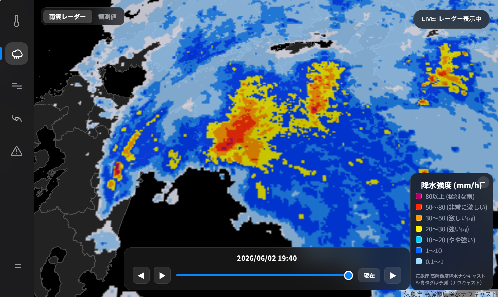
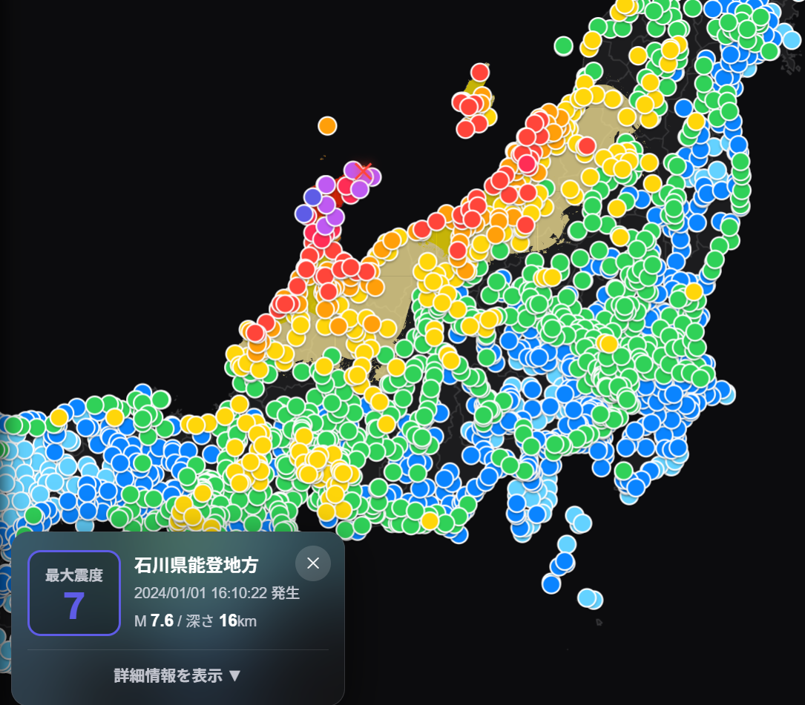
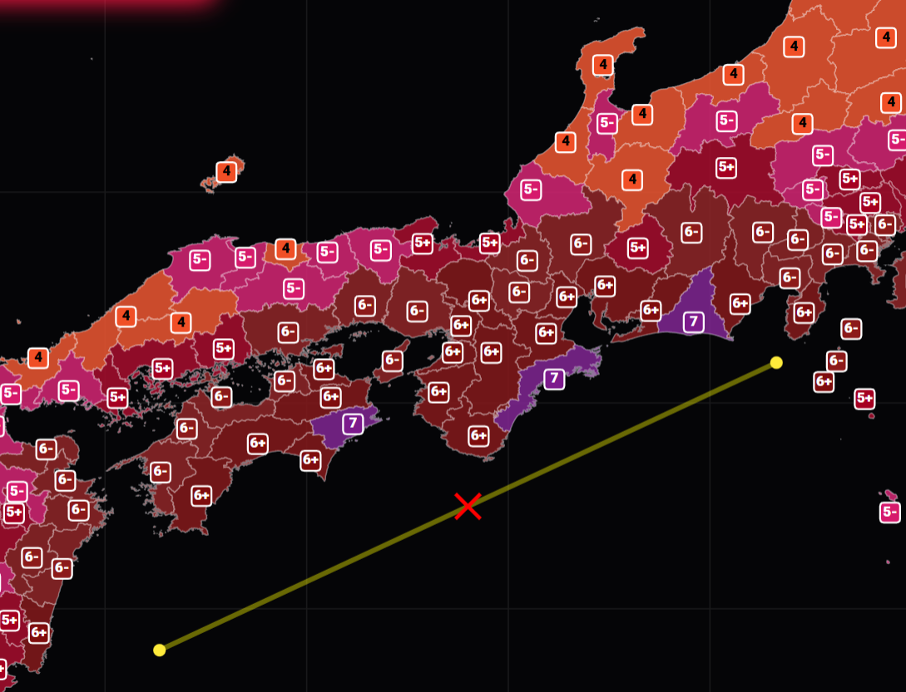

Visualization Engineer
skotm
気象・地震・防災情報を、より分かりやすく可視化する。
主に JavaScript を用いて、リアルタイムデータの取得・解析・地図上への高度な可視化を行っています。社会的意義の大きいデータを、誰もが直感的に理解できるインターフェースへ。

Featured Project
WIS Viewer
気象庁の公開データを利用し、気温・降水量・風・台風・警報・雨雲レーダーなどを地図上でリアルタイムに可視化するアプリケーション。
MapLibre JS
GeoJSON
App ↗
GitHub →
Latest Updates
@skotm →

Project
EQS Viewer
地震情報や全国の観測データをリアルタイムで収集・マッピング。
JS
App ↗
GitHub →

Simulation
EQS
仮想地震の発生からP波・S波の伝播、震度計算までを再現。
Py/JS
App ↗
GitHub →
Blog
ひとこと
View All Notes
→
Activity
GitHub
日々の開発活動、作成したリポジトリ、ソースコードを公開しています。
Contributions
View →